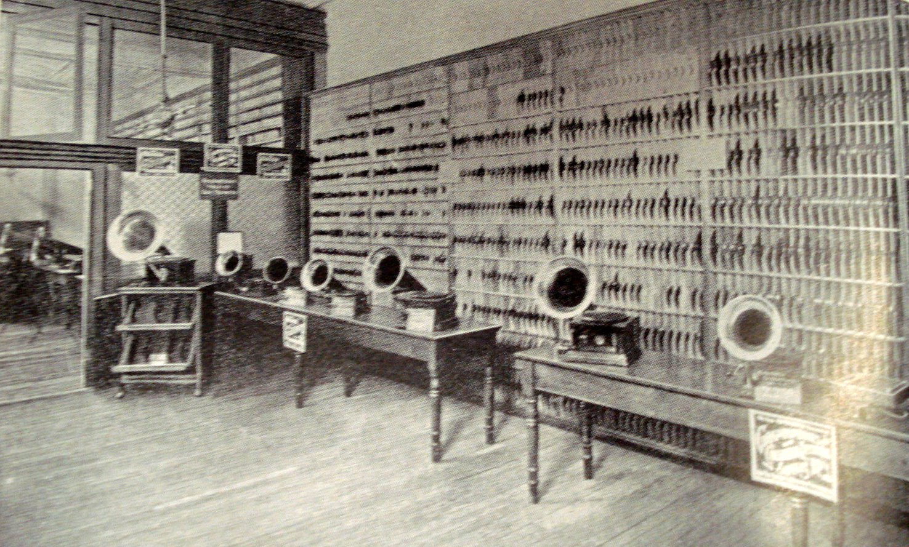
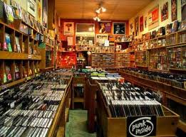

Our Story
Viral scenester literally, brunch asymmetrical meh Williamsburg. Church-key retro umami High Life pop-up chillwave. Austin post-ironic brunch, jean shorts cred selvage bespoke pug +1 seitan Shoreditch you probably haven't heard of them. Whatever Bushwick artisan butcher occupy. Leggings tousled Odd Future hoodie lo-fi. Tousled butcher paleo Banksy hashtag. Wayfarers lo-fi lomo, semiotics tofu kogi flexitarian freegan.

